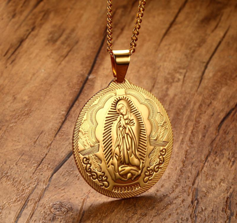

ikonë e mrekullueshme, që kur kam filluar të mbaj, edhe shpirti im është bërë më i qetë. Unë mahnitëm nga detajimi i aftë i imazhit të Nënës së Zotit Antik i
Renata S.
Copat të 20 ngelura
Nëna e Zotit e Kazan-ës është një nga imazhet më të respektuara të Nënës së Zotit në Rusi të krishterët e vërtetë besimtarë, ajo dhuron Hirin e Zotit, ngushëllimin dhe gëzimin.
Ikona e Nënës së Zotit e Kazan-ës përdoret për të bekuar ata që janë të martuar për një jetë të gjatë dhe të lumtur. Ikona e vogël zakonisht varet mbi djepin e foshnjës në mënyrë që ai të fle i qetë.
Ikona që përshkruan Nënën e Zotit nuk është vetëm një simbol i besimit, por edhe një zbukurim elegant. Karakteristikat:
madhësia 3.8x3 cm - e mjaftueshme për të riprodhuar me saktësi detaje të vogla dhe dekor filigran
model zbukurimi rreth perimetrit të imazhit – më ornamente bizantine,
Mbështetjë për varësen
absolutisht çdo detaj është bërë në përputhje me kanunet e kishës ortodokse
ikonë e mrekullueshme, që kur kam filluar të mbaj, edhe shpirti im është bërë më i qetë. Unë mahnitëm nga detajimi i aftë i imazhit të Nënës së Zotit Antik i
Renata S.

E stilizuar për vjetërsi, skaj shumë i bukur rreth perimetrit të figurës. Gjatë kohës përdorimit pa e hequr - nuk oksidohet, edhe pas gjashtë muajsh duket sikur e bleva atë dje. Meqenëse e
Trëndelina F.
Gjatë gjithë kohës që mbaj këtë ikonë, kam qenë me fat në gjithçka: blemë një makinë të re, arrita të shes shtëpinë që ishte në shitje shumë vite më parë
Xhevaire K.
Porosia erdhi shumë shpejt, për vetëm 3 ditë. Imazh shumë i bukur, ishte shumë herë më mirë sesa në foto. Shumë faleminderit!
Lorena D.

Porosia erdhi në të nesërmen. Ikona për varësen përputhet saktësisht me përshkrimin në faqe, shumë e bukur, e vesh me kënaqësi
Elena K.
Unë as që e prisja që ajo të ishte aq e bukur!
Bukuroshe Gj.

Një ikonë e bukur e vogël, e bleva për nënën time – u ndjeva mirë kur e pashë atë të lumtur pasi mori dhuratën.
Sokol I.
Ne nuk pranojmë parapagim. Pagesa dorëzohet postierit pas marrjes së porosisë.

Lini një kërkesë në faqen tonë të internetit

Ne do t'ju telefonojmë brenda 5 minutash për të konfirmuar porosinë

Transporti I porosisë behet më postë privatë brenda 1-3 ditësh